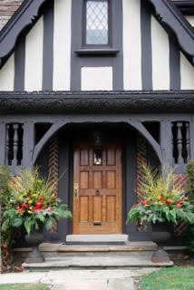

Let us put the "happy" back in your holidays.
Holidays are a wonderful chance to surprise and delight your friends, customers and coworkers.
Add to the festivities with custom holiday decorations and leave the stress and worry of decorating to us. We create custom-decorated trees, winter scenes, festive displays, exterior decorations, wreaths, garlands, swags, holiday planters, Hanukkah decorations, Kwanzaa decorations and more.
Our decorative services are available for both residential and commercial customers, so whether you need your home properly preened for the holidays or your office decorated to reflect the season, we are the perfect choice to help you prepare for any holiday.
